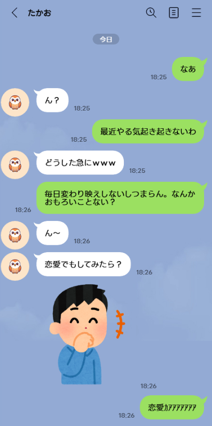

恋愛のすすめ
今日、友達に「恋愛でもしてみたら？」って言われた。
いや、別にしてないわけじゃないんだけどな、と思った。
本当は頭の片隅ではずっと考えてはいる。
たぶん友達の言う恋愛しろって、彼女をつくれってことなんだろう。
でも正直なところ、どうすればいいかわからない。
俺的には別にこのままでもいいんだけど、彼女すらつくれない奴だとは思われたくない。
とはいえ、問題がある。
俺、今まで容姿に気を使ってこなかった。
服も髪も「まあいいか」で済ませてきたし、そもそも心底興味がない。
もちろん彼女ができたことも一度もない。
だから、いざ「彼女作れ」と言われても困る。
何から始めればいいのかもわからないし、そもそも自分が女と歩く姿が全然想像できない。
彼女って、そんなに簡単に「よし、つくるぞ」って言って作れるものなんだろうか。
とりあえず今日は、鏡を見て「俺ってどんな顔だっけ」と考えるところから始めてみようと思う。
